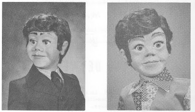

Slots or not?
5/25/2009
Question: Hello. I found your website and blog spot and I was wondering if you can make any figures with the "living" mouths that Maher Studios sold years ago. I have searched the internet but have yet to find anyone that makes them, or I can't get a reply from some figure makers. Thanks, Chris
* * * * * *
Answer: No, I do not make figures with the "living" (non-slot) mouth. Nor do I know anyone who currently does. Craig Lovik made the living mouth Storyteller figures we sold through Maher Studios in the 1970s. He told me that type of mouth is actually easier to build than the traditional slotted jaw. And a dummy without slots does have a more realistic appearance... until it starts talking.
When such figures are "talking", only the figure's lower lip moves. There is no chin/jaw movement. That is less realistic (our jaw moves as much or more than our lips when we talk) and less visible. Personally, I opt for greater visibility for the audience. Another quirk I've learned - people only mention the slots on a dummy's mouth when there are none. Clinton

These Storyteller figures were introduced in 1973. Billy (left) and Brian.